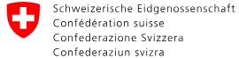
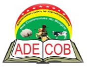
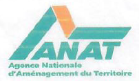
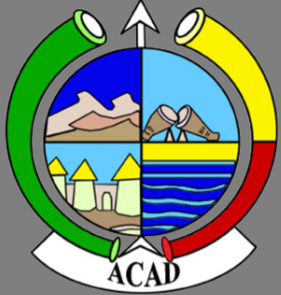
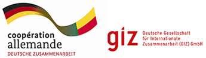

Mairie de Kalalé
Kalalé

Bureau de la Coopération Suisse au Bénin
Bénin - Nigéria - Niger Burkina Faso - Togo

Association Pour le Développement des Communes du Borgou
Communes du Borgou
Mairie de Tchaourou
Tchaourou
Bureau de la Coopération Suisse au Bénin
Bénin
Mairie de Kalalé
Kalalé

Agence Nationale de l’Aménagement du Territoire
Bénin

Association des Communes de l’Atacora et de la Donga
Communes de l’Atacora et de la Donga
Mairie de Bembèrèkè
Bembèrèkè
Association Pour le Développement des Communes du Borgou
Parakou et Sinendé

Coopération Allemande au Développement (GIZ)
Cotonou
Association des Communes de l’Atacora et de la Donga
Tanguiéta et Cobly
Association Pour le Développement des Communes du Borgou
N’Dali - Pèrèrè - Tchaourou
Remplissez vos informations ci-dessous et nous vous contacterons dans les plus brefs délais pour en discuter !